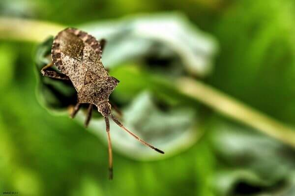

CHINCHE

Los chinches que infesta hogares hoy en día proviene originalmente de una especie que se alimentaba de la sangre
de los murciélagos que vivían en cuevas muchos años atrás. Cuando los humanos comenzaron a vivir en cuevas, los
chinches comenzaron a alimentarse chupando la sangre de los humanos. Años después cuando los humanos dejaron las cuevas y comenzaron a desarrollar
civilizaciones agrícolas, los chinches se dispersaron
junto a ellos. Desde ese tiempo los humanos han
transportado los chinches con ellos a todos los lugares
del mundo.
Los chinches pertenecen a la familia de insectos
Cimicidae. Todos los miembros de esta familia se alimentan exclusivamente de sangre. Los chinches de
la cama, como se conocen popularmente (Cimex lectularius), tienen cinco estados de desarrollo. Cada estado de desarrollo (ninfas) debe alimentarse de sangre
para poder pasar al siguiente estado de desarrollo. En
los chinches, al igual que en todos los insectos, el esqueleto se encuentra en la parte exterior del cuerpo
(exoesqueleto). Para poder crecer los chinches deben
cambiar el exoesqueleto. Este cambio del exoesqueleto se conoce como muda. Estados inmaduros o ninfas deben alimentarse de sangre para mudar exitosamente.
Después de pasar por los cinco estados de desarrollo, los chinches se convierten en adultos. Machos y hembras chinches
deben alimentarse para reproducirse. El diagrama arriba muestra el ciclo de vida de los chinches incluyendo todos los
estados de desarrollo, antes y después de alimentarse. El proceso total de desarrollo puede tardar alrededor de ~ 37
días en condiciones óptimas de temperatura (>72° F). Los chinches adultos pueden vivir cerca de un año dependiendo
del acceso al alimento y de la temperatura a la que se encuentren.
- Una hembra chinche produce entre 1- 7 huevos por día durante ~10 días después de consumida
la sangre. Ella tendrá que alimentarse de nuevo para poder producir más huevos.
- Una hembra puede poner huevos en cualquier lugar de una
habitación.
- El tiempo de desarrollo de los estados inmaduros de chinches o ninfas depende de la temperatura del ambiente
y de la disponibilidad de alimento
- Se hacen activos en la
noche, entre la media noche y las 5:00 de la mañana.
- Después de pasar por los cinco estados de desarrollo, los chinches se convierten en adultos.
BACK